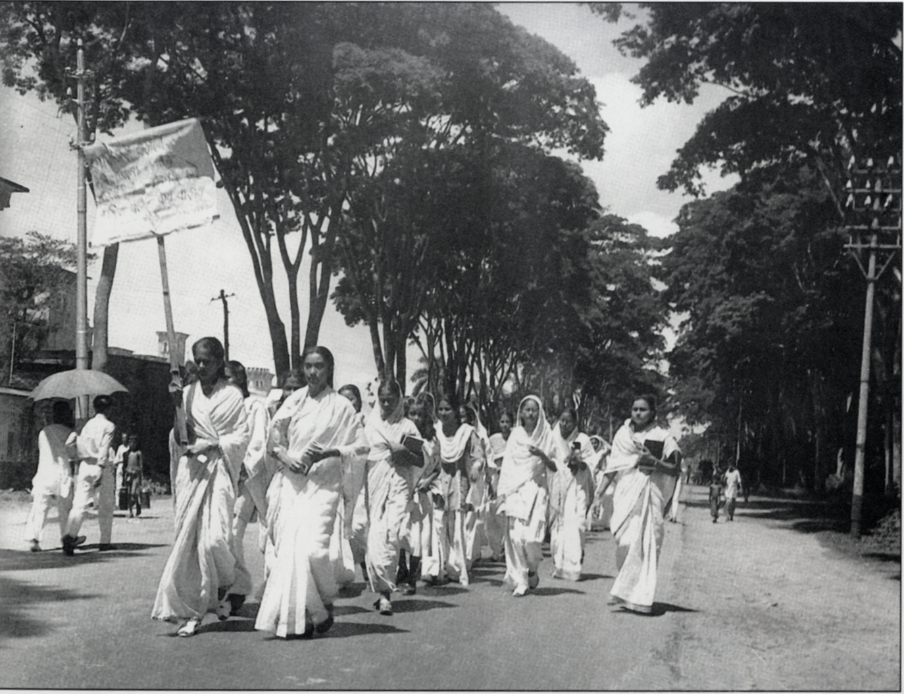
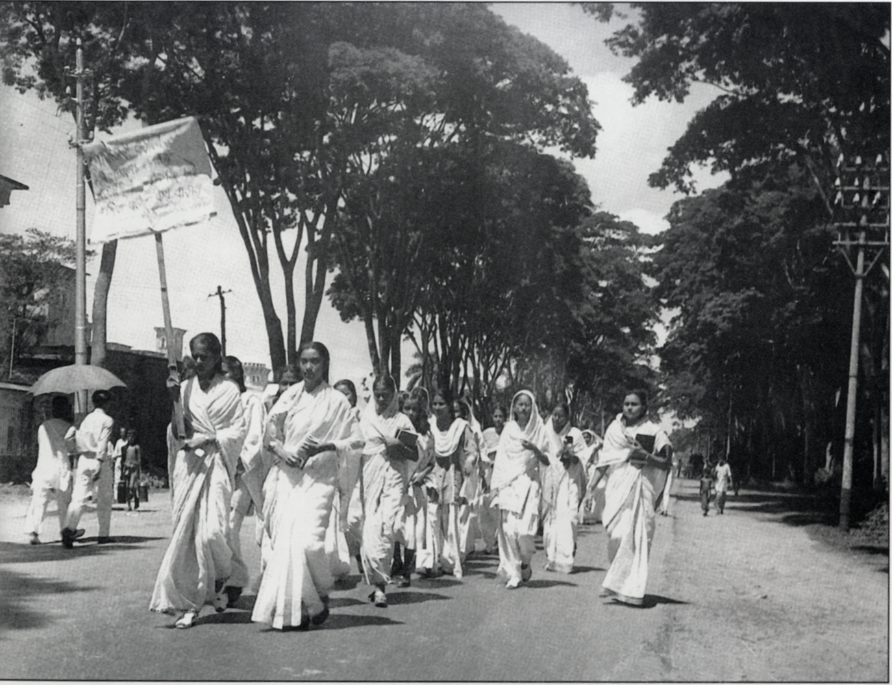

The genocide in Bangladesh began on 25 March 1971 with the launch of Operation Searchlight,[5] as the government of Pakistan, dominated by West Pakistan, began a military crackdown on East Pakistan (now Bangladesh) to suppress Bengali calls for self-determination.[6] During the nine-month-long Bangladesh Liberation War, members of the Pakistan Armed Forces and supporting pro-Pakistani Islamist militias from Jamaat-e-Islami[7] killed between 300,000 and 3,000,000[1][4][8] people and raped between 200,000 and 400,000 Bengali women,[8][9][10] in a systematic campaign of genocidal rape.[11][12] The Government of Bangladesh states 3,000,000 people were killed during the genocide, making it the largest genocide since the Holocaust during World War II.[13][14][15] The actions against women were supported by Pakistan's religious leaders, who declared that Bengali women were gonimoter maal (Bengali for "public property").[16] As a result of the conflict, a further eight to ten million people[17] fled the country to seek refuge in neighbouring India. It is estimated that up to 30 million civilians were internally displaced[8] out of 70 million.[18] During the war, there was also ethnic violence between Bengalis and Urdu-speaking Biharis.[19] Biharis faced reprisals from Bengali mobs and militias,[20] and from 1,000[21] to 150,000[22][23] were killed. There is an academic consensus that the events which took place during the Bangladesh Liberation War constituted a genocide;[24] however, there are some scholars and authors who disagree that the killing was a genocide.[25]
.jpg) 
